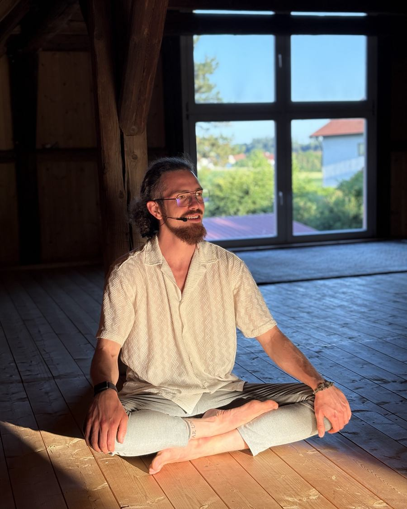
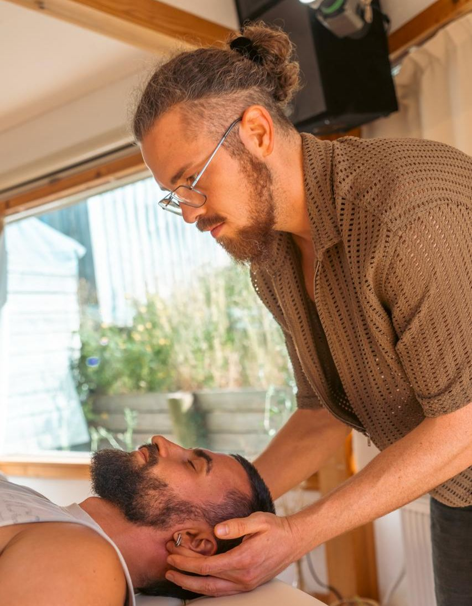

Eine Session von innen.
Neo Emotional Release klingt nach viel. In Wahrheit ist es erst einmal erstaunlich einfach: Du legst dich hin, du atmest, ich begleite dich — und dein Körper macht den Rest. Hier steht, was wirklich passiert, damit du nicht ins Ungewisse gehst.

Ankommen, ohne Vortrag.
Wir starten mit einem kurzen Gespräch. Was ist gerade da? Wo klemmt es? Du musst nichts vorbereiten und keine Vorgeschichte aufsagen — ein Satz reicht, manchmal reicht auch „ich weiß es nicht".
Dann klären wir zwei Dinge, bevor wir anfangen: wo Berührung für dich okay ist und wie du jederzeit stoppen kannst. Das ist kein Formalkram. Das ist die halbe Arbeit.

Der Teil, den dein Kopf nicht steuern kann.
Du liegst. Dein Atem wird tiefer und schneller, als du ihn im Alltag benutzt. Ich arbeite an Punkten, an denen dein Körper Spannung parkt — Kiefer, Brustkorb, Bauch, Beine —, und begleite dich mit meiner Stimme durch das, was dabei hochkommt.
Das kann Wut sein. Tränen. Zittern. Lachen. Oder erst mal gar nichts, und dann plötzlich alles auf einmal. Nichts davon ist falsch, und nichts davon musst du erklären, während es passiert.
Und danach lassen wir es landen.
Am Ende sitzen wir wieder. Wir schauen an, was sich verändert hat — im Körper, nicht im Kopf. Und wir überlegen, was du in den nächsten Tagen brauchst, damit das Erlebte nicht sofort wieder zugedeckt wird.
Meine Erfahrung: Die eigentliche Bewegung passiert oft in der Woche danach. Deshalb gehörst du nach einer Session nicht direkt zurück ins nächste Meeting.
Online oder vor Ort — beides geht wirklich.
Vor Ort
Ich arbeite mit den Händen. Berührung, Druck, Halt — das ist der direkteste Weg zu dem, was dein System hält.
- ca. 90 Minuten
- Raum in München und Regensburg
- Matte, Decke, Ruhe — mehr brauchst du nicht
Online
Ich leite dich durch Atem, Visualisierung und Selbstberührung an denselben Punkten. Anders — aber nicht weniger tief. Viele arbeiten sogar lieber im eigenen Zuhause.
- ca. 90 Minuten per Video
- Ein Raum, in dem du laut sein darfst
- Matte oder Bett, stabile Verbindung
Das wollen fast alle wissen.
Muss ich mich ausziehen?
Nein. Bequeme Kleidung reicht. Ich arbeite über der Kleidung, und wir klären vorher, welche Körperbereiche für dich okay sind und welche nicht.
Was, wenn nichts kommt?
Dann kommt nichts, und auch das ist eine Information. Dein System entscheidet über das Tempo, nicht dein Ehrgeiz. Ich habe noch keine Session erlebt, aus der jemand mit leeren Händen rausgegangen ist — aber manchmal sieht das Ergebnis anders aus als erwartet.
Ich schäme mich, über meine Scham zu reden.
Willkommen. Genau dafür ist der Raum da. Scham lebt davon, versteckt zu bleiben — sie verliert ihre Macht dort, wo sie gesehen wird, ohne bewertet zu werden. Du musst hier nichts beschönigen und nichts sortieren.
Wie viele Sessions brauche ich?
Ehrliche Antwort: kommt drauf an. Manche kommen mit einem konkreten Thema und sind nach wenigen Sessions fertig, andere gehen einen längeren Weg. Nach der ersten Session sage ich dir meine Einschätzung — keine Verkaufsformel.
Ersetzt das eine Psychotherapie?
Nein, und das sage ich bewusst deutlich. Coaching und Neo Emotional Release sind Prozess- und Persönlichkeitsarbeit, kein Heilverfahren. Bei psychischen Erkrankungen und in akuten Krisen gehört ärztliche oder psychotherapeutische Hilfe an die erste Stelle. Parallel geht oft gut — ersetzen geht nicht.
Sofort erreichbar: Notruf 112 · Telefonseelsorge 0800 111 0 111 · Krisendienst Bayern 0800 655 3000
Mit wem arbeitest du?
Mit Erwachsenen, die bereit sind hinzuschauen — unabhängig von Alter und Geschlecht. Eines haben die meisten gemeinsam: Sie haben schon viel verstanden und wollen jetzt endlich fühlen.
Erst reden, dann entscheiden.
Wir telefonieren 30 Minuten, kostenlos und unverbindlich. Danach weißt du, ob eine erste Session für dich Sinn ergibt.
Kennenlern-Call anfragen